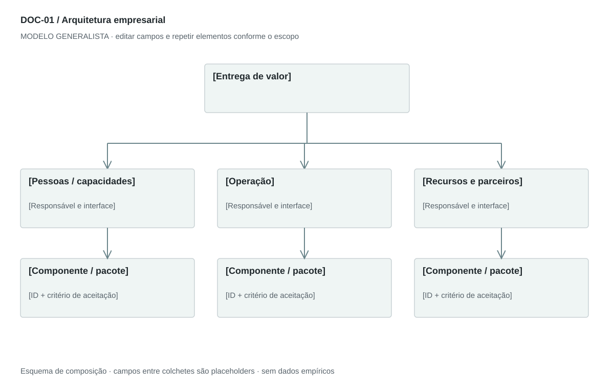

DOC-01 / Biblioteca documental generalista
Arquitetura empresarial
Definir capacidades, responsabilidades, componentes e interfaces necessários para entregar a proposta de valor.
Modelo de investigação. Não representa uma análise concluída. Campos vazios devem permanecer identificados; não inventar dados para completar figuras.
Estrutura editorial
4–6 páginas A4 retrato; visão geral em paisagem quando o fluxo exigir. Tabelas Capacidade × Responsável e Camada × Componente × Interface. A sequência operacional deve permanecer separada da hierarquia organizacional.
Visual previsto

Camadas: pessoas → operação → recursos; setas rotuladas com o que é transferido. Fronteiras distinguem interno de parceiro. Não implica relação hierárquica.
Imagens: Diagrama vetorial obrigatório; ícones opcionais de pessoas, processos e recursos com o mesmo traço. Fotos e logos de fornecedores dispensáveis.
Dicionário de dados
| Campo | Tipo | Dado necessário |
|---|
| capacidade | texto | Função necessária para entregar valor, sem pressupor cargo executivo |
| responsavel | referencia | Papel que responde pela capacidade |
| componente | texto | Recurso, sistema ou unidade de operação |
| interface | texto | Troca entre componentes, com entrada e saída |
| ativo_critico | texto | Recurso ou informação cuja perda prejudica a entrega |
| controle | texto | Medida preventiva ou de recuperação e prova de funcionamento |
| gatilho_escala | texto | Condição mensurável para mudar equipe ou infraestrutura |
Todos os registros precisam de classificação, fonte, localização, datas, confiança e limitação. Números também precisam de unidade, moeda quando aplicável e período.
Modelo preenchível
Os quadros amarelos podem ser editados nesta página para impressão. Edições não são gravadas automaticamente: use o Markdown/JSON para manter uma versão ou imprima em PDF após editar.
[Negócio] · [Versão] · [Data-base] · [Autor] · [Audiência] · [Território]
Pergunta decisória: [A preencher]
Escopo: [A preencher]
1. Escopo e fronteiras
Descreva a entrega principal, atores externos e o que fica fora da operação.
[Análise + evidência + implicação + lacuna]
2. Arquitetura organizacional
Liste capacidades indispensáveis, responsável atual, terceirização e gatilho de contratação. Um fundador pode acumular papéis.
[Análise + evidência + implicação + lacuna]
3. Arquitetura da solução
Explique recursos físicos, pessoas, ferramentas, sistemas e fluxos de informação. Para serviços sem software próprio, descreva a infraestrutura de entrega.
[Análise + evidência + implicação + lacuna]
4. Processo operacional
Do pedido à entrega e ao suporte: entrada, atividade, saída e exceção.
[Análise + evidência + implicação + lacuna]
5. Controles e continuidade
Para cada ativo crítico, ligue ameaça, controle, responsável, teste e recuperação.
[Análise + evidência + implicação + lacuna]
6. Decisões e evolução
Compare fazer, comprar e contratar; registre dependências e gatilhos de escala.
[Análise + evidência + implicação + lacuna]
Decisão e próximo passo
[Decisão e justificativa]
[Alternativa considerada]
[Condição de reversão]
[Ação, responsável, prazo e critério]
Fontes e limites
[Fonte + localização + datas + o que sustenta + limitações]
Critérios de revisão
- Cada capacidade tem responsável e saída.
- Controle proposto não é evidência de controle implantado.
- Papéis são compatíveis com estágio e orçamento; não copiar uma diretoria completa.
Estudo do arquivo original
DOC-01-fonte.pdf — Quatro páginas A4 retrato. Organização, tecnologia, processo operacional e segurança são apresentados em texto curto e tabelas cinzas de duas colunas. As quatro tabelas principais são imagens. Papéis executivos são listados antes das camadas técnicas. A última página separa proteção dos dados de controle de acesso.
Observação do original e adaptação recomendada são camadas distintas. Nomes, preços, localidades, contatos e conclusões do caso-fonte não devem preencher a nova análise.